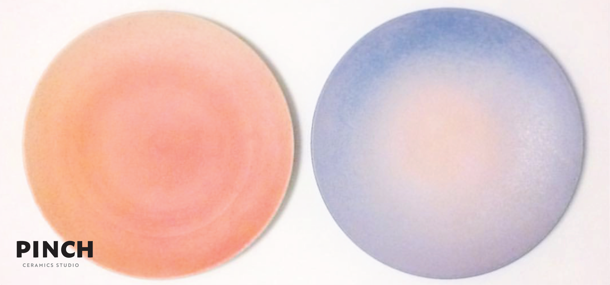
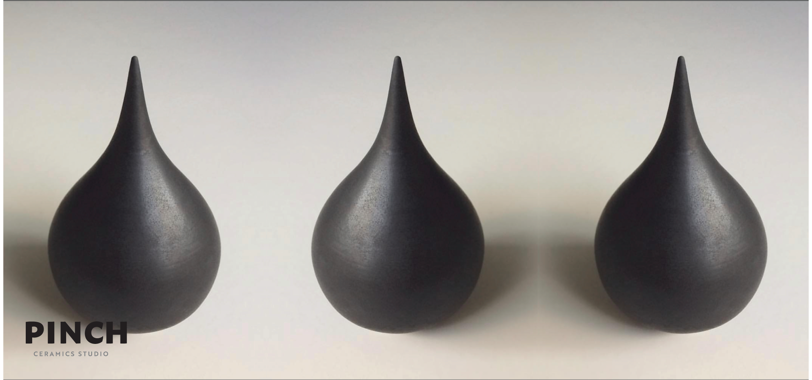
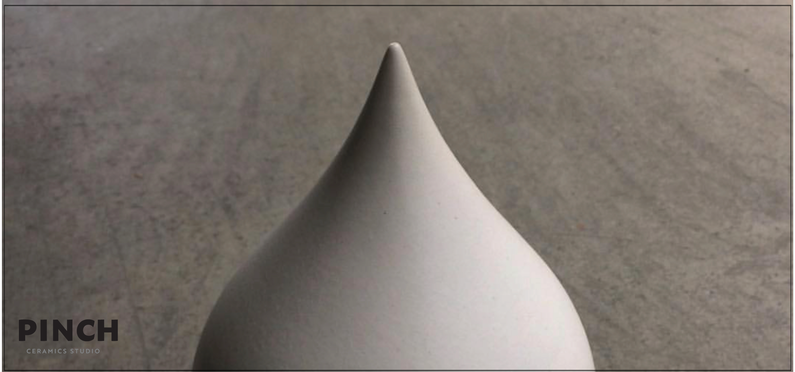
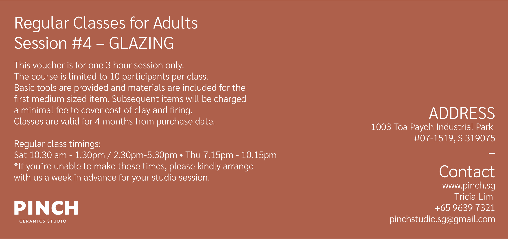

pinch ceramics studio
A series of studio gift cards using the ceramics themselves as the primary visual language. A simple, pared back layout to highlight the tactile, handmade quality of the studio's work.


